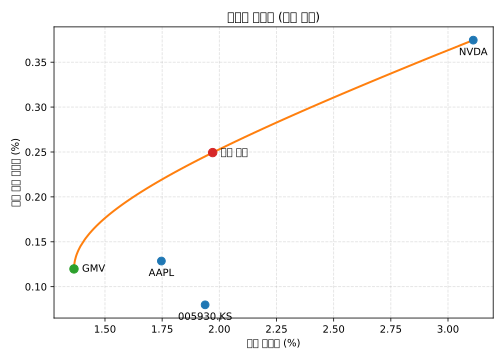

관측 기간
2023-10-16 ~ 2025-10-10 (516 거래일)
2023-10-16 ~ 2025-10-10 (516 거래일)
삼성전자(005930.KS), 애플(AAPL), 엔비디아(NVDA)
공통 424 거래일, 롱온리 제약하 평균-분산 최적화
CSV의 3중 헤더를 정규화하고 결측이 없는 424개의 공통 수익률 구간으로 정리했습니다.
| 티커 | 항목 | 최소 | 평균 | 최대 |
|---|---|---|---|---|
| 005930.KS | Close | 48,968.97 | 66,471.53 | 94,400.00 |
| 005930.KS | High | 50,784.92 | 67,202.08 | 94,500.00 |
| 005930.KS | Low | 48,968.97 | 65,822.65 | 92,700.00 |
| 005930.KS | Open | 49,263.38 | 66,509.00 | 94,000.00 |
| 005930.KS | Volume | 2,957,915 | 19,481,204.69 | 57,691,266 |
| AAPL | Close | 163.82 | 209.52 | 258.10 |
| AAPL | High | 165.21 | 211.47 | 259.24 |
| AAPL | Low | 162.91 | 207.33 | 256.72 |
| AAPL | Open | 164.17 | 209.29 | 257.99 |
| AAPL | Volume | 23,234,700 | 56,558,297.39 | 318,679,900 |
| NVDA | Close | 40.30 | 115.60 | 192.57 |
| NVDA | High | 40.85 | 117.54 | 195.62 |
| NVDA | Low | 39.21 | 113.41 | 191.06 |
| NVDA | Open | 40.43 | 115.59 | 193.51 |
| NVDA | Volume | 105,157,000 | 325,122,504.81 | 1,142,269,000 |
| 티커 | 평균 일별 수익률 | 일별 변동성 |
|---|---|---|
| 005930.KS | 0.080% | 1.94% |
| AAPL | 0.129% | 1.75% |
| NVDA | 0.375% | 3.11% |
5,769만 주 거래, 종가 ₩70,794.53
11억 4,227만 주 거래, 종가 $87.49
3억 1,868만 주 거래, 종가 $227.14
롱온리 제약을 가진 평균-분산 최적화를 통해 도출한 프론티어입니다.

pip install pandas numpy matplotlib
python analysis.py를 실행하면 표와 SVG가 자동 생성됩니다.
최신 SVG는 자동으로 덮어써지며, 웹페이지는 정적 자산을 참조합니다.